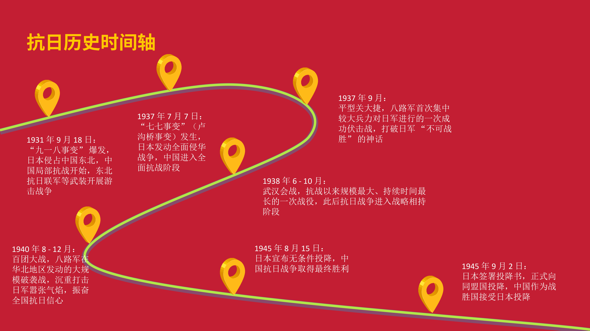

历史回溯（时间轴）
以时间轴形式回顾反法西斯战争胜利与民族复兴的关键节点，理解历史经验如何转化为发展动能。

1931 年 9 月 18 日 (九一八事变)
日本侵占中国东北，中国开始局部抗战，东北抗日联军等武装力量开展游击战争。

1937 年 7 月 7 日 (七七事变/卢沟桥事变)
日本发动全面侵华战争，标志着中国正式进入全面抗战阶段。

1937 年 9 月 (平型关大捷)
八路军首次集中较大兵力对日军进行伏击战并取得成功，打破了日军“不可战胜”的神话。
1938 年 6 - 10 月 (武汉会战)
这是抗战以来规模最大、持续时间最长的一次战役，此后抗日战争进入战略相持阶段。

1940 年 8 - 12 月 (百团大战)
八路军在华北地区发动的最大规模破袭战，沉重打击了日军，振奋了全国抗日信心。

1945 年 8 月 15 日
日本宣布无条件投降，标志着中国人民抗日战争取得了最终胜利。
1945 年 9 月 2 日
日本正式签署投降书，向同盟国投降，中国作为战胜国接受日本投降。
胜利精神与复兴的内在逻辑
从精神内核到制度建设与现代化发展，建立历史记忆与现实进步的系统联系。
精神
抗争 · 团结 · 牺牲 · 国际主义
反法西斯战争胜利精神的核心要素，为新时代凝聚共同意志与价值共识，形成文化自信的重要来源。
制度
制度建设与治理现代化
从国家制度与法律体系的完善，到统一战线与社会组织建设，为长治久安与现代化治理提供保障。
发展
科技创新与经济现代化
将精神力量转化为创新驱动与产业升级，推动高质量发展，增强综合国力与人民福祉。
历史记忆与时代行动
通过教育传承、科研创新、产业升级与社会参与，让胜利精神转化为复兴实践。
教育与传承
历史教育、纪念馆与主题实践活动，推动青少年在记忆中汲取精神力量。
科研与人才
加强基础研究与关键技术攻关，培养具备家国情怀与国际视野的高层次人才。
产业与创新
把精神转化为质量与创新的文化，促进制造业与现代服务业的高质量发展。
提示：更多内容可在“智能问答”中继续探索与学习。
← 返回主页